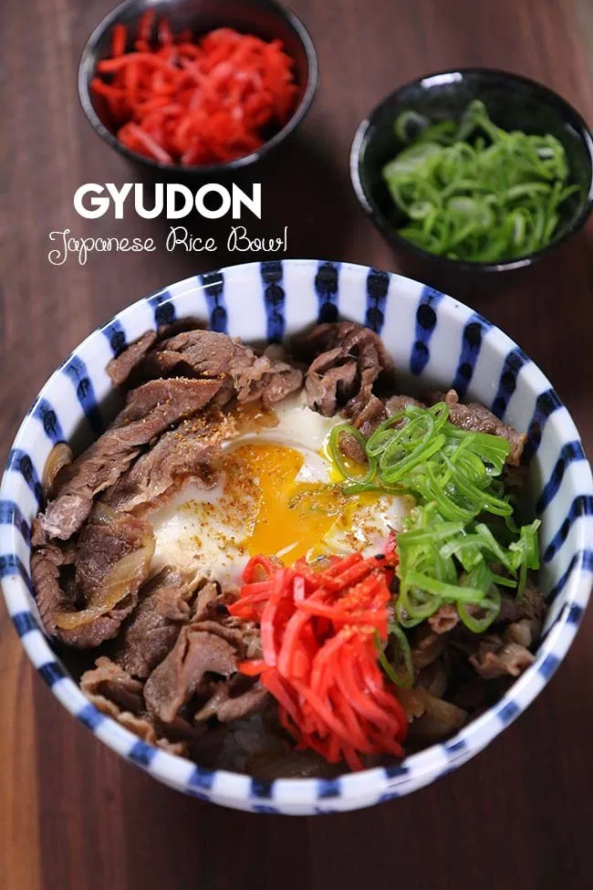

Gyudon

Description
Gyudon, pronounced gyoo-don is a simple Japanese Beef Rice Bowl.
It's super easy to put together and is made up of very simple ingredients!
The thin tender beef is fried in a gingery sweet soy sauce, along with onion.
Then it is served right on top of warm cooked rice. Try to use short grain rice to get the ultimate combination of delicious goodness!
Ingredients
- 1 Tbs soy sauce
- 1 Tbs sugar
- 2 Tbs mirin, seasoned rice wine
- 2 sake, rice wine
- 1/2 dashi broth
- 2 slices ginger
- 4 oz onion, sliced (approximately 1/2 of medium size onion
- 8 oz thinly sliced beef (sirloin or new york strip or ribeye
- 2 eggs
- 2 cups rice (short grain)
- benishoga
- chopped green onion
- shichimi togarashi
Steps
- In a large skillet, combine soy sauce, sugar, mirin, sake, dashi and ginger. Cover and bring it to boil over high heat. Let it boil for 1 minute so alcohol will evaporates and flavor will combine.
- Reduce heat to medium high. Add sliced onion, cover and simmer for another minute.
- When onion is soften, remove ginger slices. Add thinly sliced beef and spread evenly on skillet. Stir occasionally so beef will cook evenly.
- minutes later or when beef is 3/4 way cooked, it will still be a little pink. This is time to add egg. I recommend you to crack eggs in a small bowl then pour into skillet, so there is no chance egg shell can get into gyudon. Cover and simmer for 1 minute for runny yolk, 2 minutes for medium cooked egg or 3 minutes for fully cooked egg.
- Serve in a bowl, on top of rice. Garnish with pickled ginger, chopped green onion and sichimi to your taste. Serve immediately and enjoy!